Programação Web
A Internet e a Web
Laboratórios PW
Nesta pequena imersão, pude aprender sobre a web e a internet 🌐:
Para isso foi usado o website https://whatismyip.com . Com o endereço de ip foi possível obter informações relativamente a localização do dispositivo
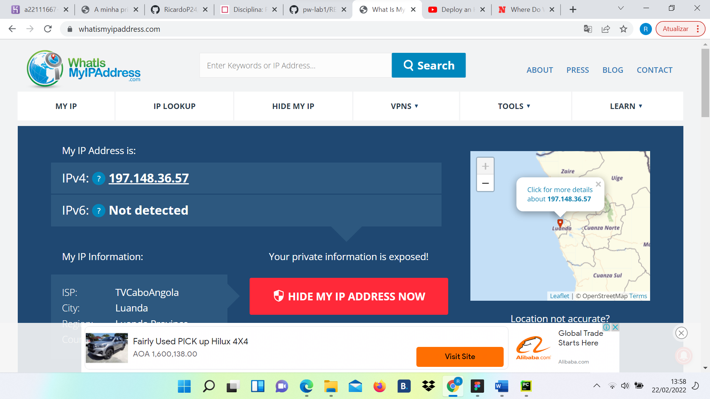Para isso usei o website ipvoid onde inseri apenas a url do meu website e me foi retornado 3 endereços ips do meu servidor remoto que pude usar posteriormente em https://whatismyip.com para determinar a sua localização terrestre.
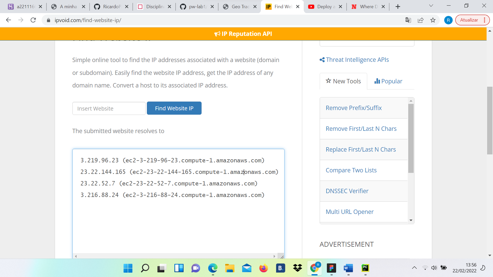Para isso usei o website https://geotraceroute.com onde coloquei primeiramente o país portugal e em seguida o ip do meu website mas todavia não obtive a interpretação gráfica talvez por estar em Angola e esta funcionalidade não estar disponível no meu país.
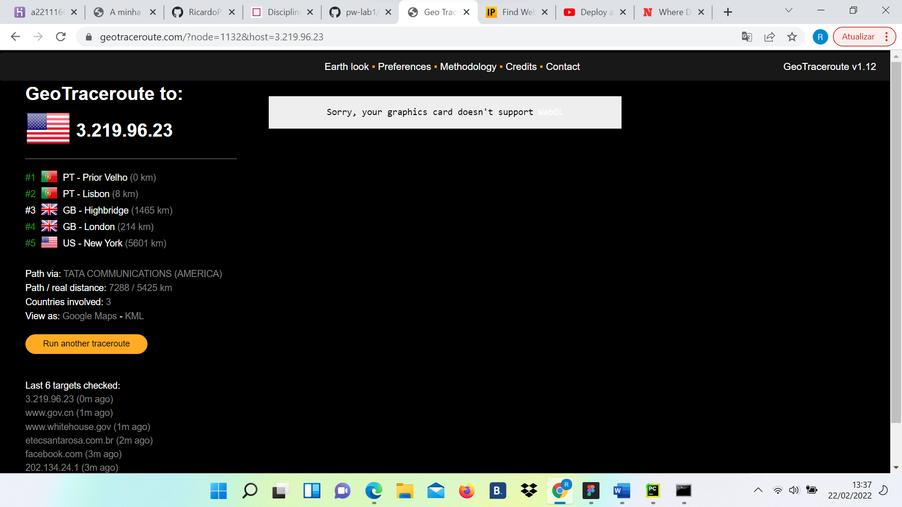Para isso foi usada a ferramenta inspecionar disponível em qualquer navegador. Nele foi possível explorar os headers, o timing e a seccção preview. Nos header podemos ver todas as requisições de todos os recursos por parte do cliente ao servidor usando o famoso comando http get. Vale lembrar que no caso da nossa página web são dois recursos pedidos pelo cliente a cada reload da página feito.
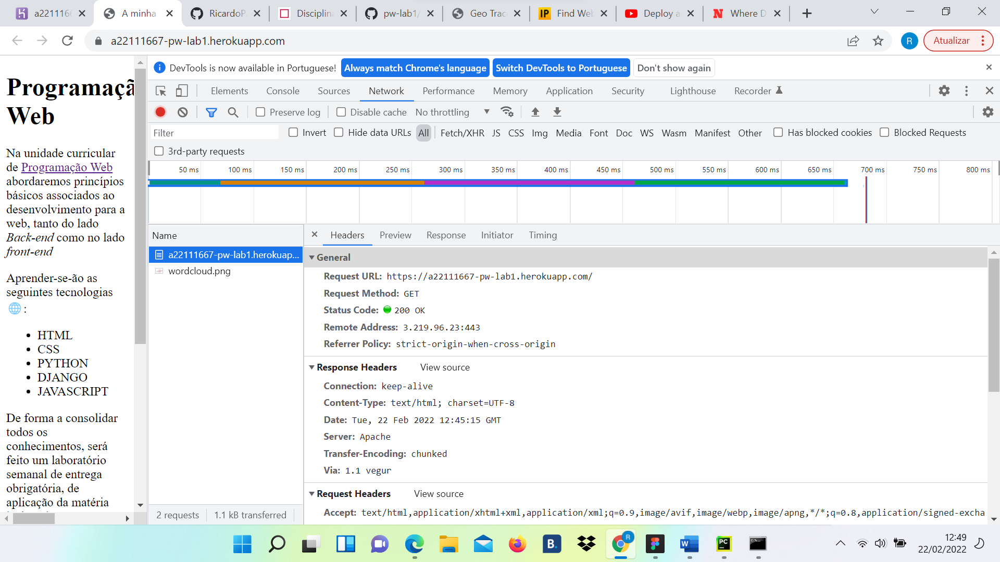 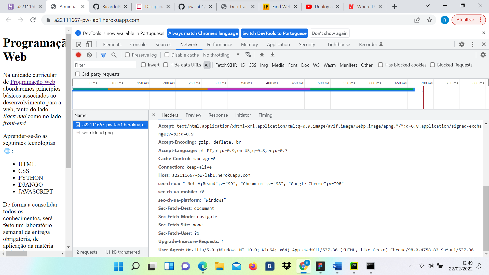 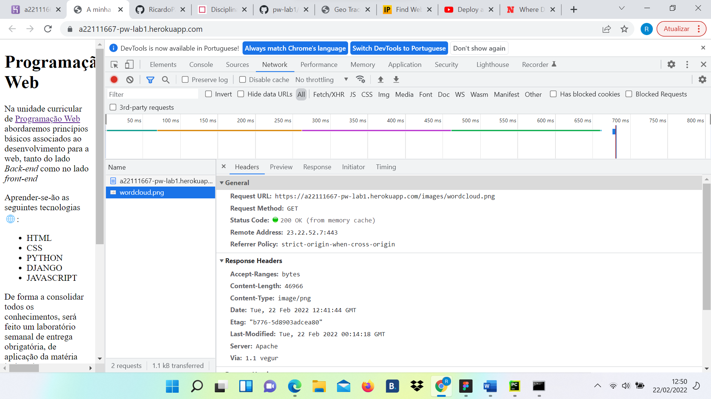 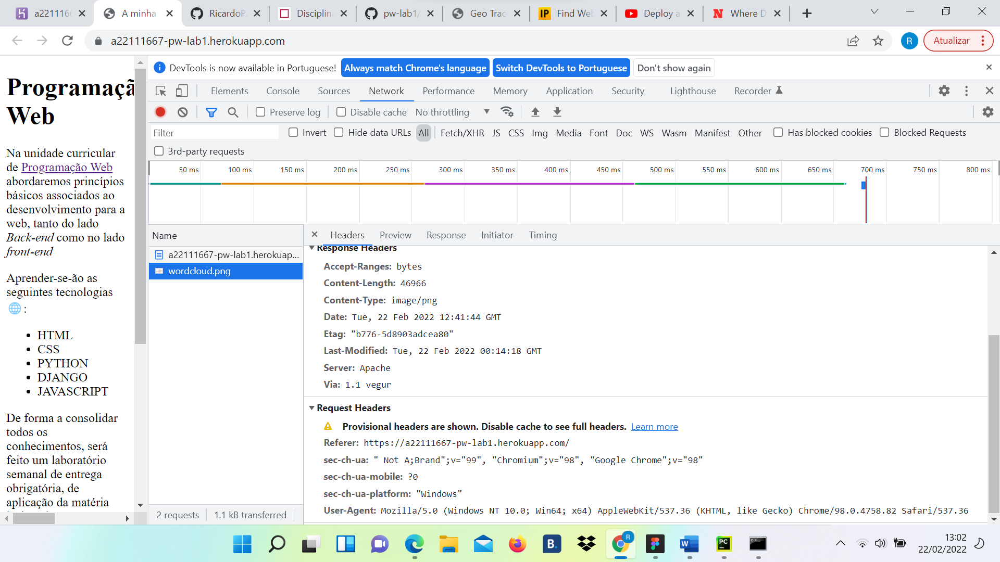Também podemos notar que na secção preview podemos vizualizar os recursos pedidos pela máquina cliente.
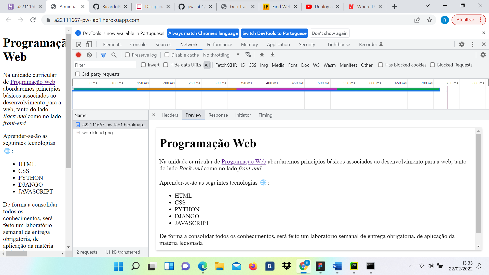 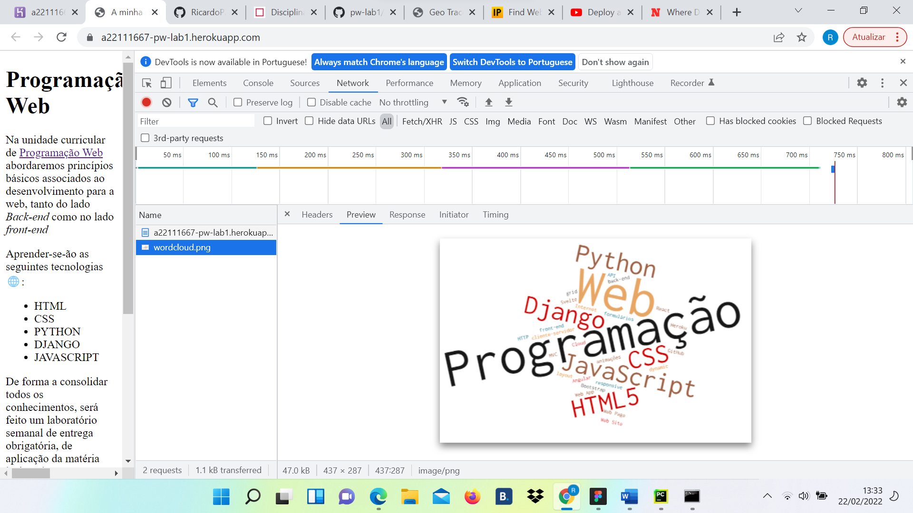Na secção timing podemos vizualizar o tempo que durou desde a requisição do cliente até a resposta do servidor de um determinado recurso.
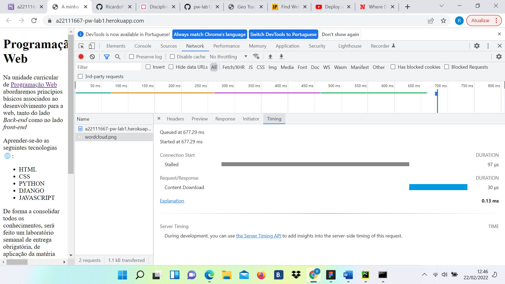 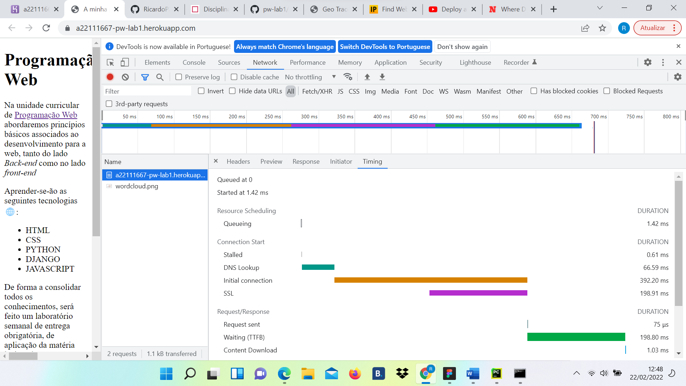